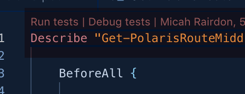
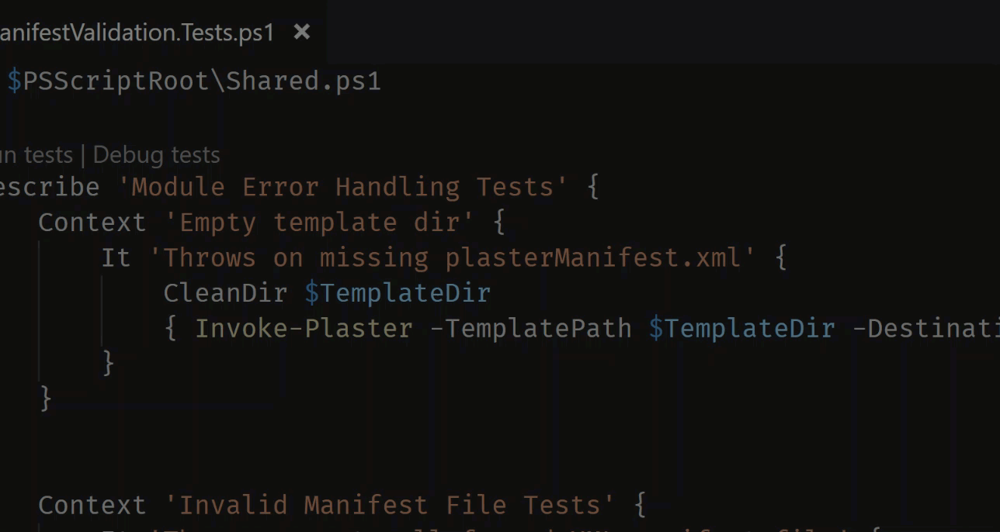
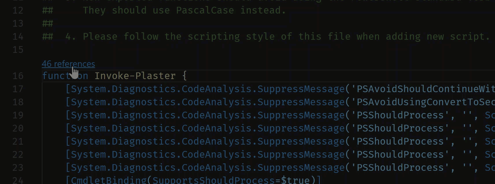
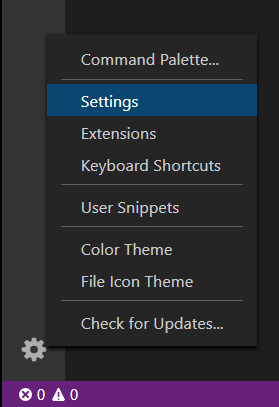

PowerShell in Visual Studio Code
PowerShell is a task-based command-line shell and scripting language built on .NET, which provides a powerful toolset for administrators on any platform.
The Microsoft PowerShell extension for Visual Studio Code (VS Code) provides rich language support and capabilities such as syntax completions, definition tracking, and linting for PowerShell. The extension works anywhere you can run VS Code and PowerShell 7 or higher. The extension also works for Windows PowerShell 5.1. The extension no longer supports the older versions of Windows PowerShell.
Our test matrix includes the following configurations:
- Windows Server 2022 with Windows PowerShell 5.1 and PowerShell 7.2
- Windows Server 2019 with Windows PowerShell 5.1 and PowerShell 7.2
- macOS 11 with PowerShell Core 7.2
- Ubuntu 20.04 with PowerShell Core 7.2
Installing the PowerShell extension
There are two versions of the extension:
- PowerShell - the fully tested stable release
- PowerShell Preview - a preview release containing new features and other changes, but not fully tested
Both extensions can be installed, but only one should be enabled. This allows you to switch from the stable to the preview version to try out new features.
Installing from within VS Code
The PowerShell extension can be installed from the Visual Studio Code Marketplace by clicking the Install Button. You can also install the PowerShell extension from within VS Code by opening the Extensions view with keyboard shortcut X (Windows, Linux Ctrl+Shift+X), typing "PowerShell", and selecting the PowerShell extension:

Installing from the command line
The extension can also be installed from any command-line shell (including PowerShell, cmd, and bash) on any supported platform using the following command:
code --install-extension ms-vscode.powershell
If you are running the VS Code Insiders build, use this command instead:
code-insiders --install-extension ms-vscode.powershell
Major features
- Syntax highlighting
- Code snippets
- IntelliSense for cmdlets and more
- Rule-Based analysis provided by PowerShell Script Analyzer
- Go to Definition of cmdlets and variables
- Find references of cmdlets and variables
- Document and Workspace symbol discovery
- Run selected section of PowerShell code using F8
- Launch online help for the symbol under the cursor using Ctrl + F1
- Local script debugging and basic interactive console support
- Enable ISE mode using P (Windows, Linux Ctrl+Shift+P) then search for "Enable ISE Mode"
Debugging
The PowerShell extension uses the built-in debugging interface of VS Code to allow for debugging of PowerShell scripts and modules. For more information about debugging PowerShell, see Using VS Code.
Multi-version support
You can configure the PowerShell extension to use any supported version of PowerShell installed on your machine by following these instructions.
Or run the PowerShell: Show Session Menu command from the Command Palette (P (Windows, Linux Ctrl+Shift+P)).
CodeLens support
CodeLenses are a VS Code feature to provide actionable, contextual information that is displayed within the source code.
CodeLens support was added in version 1.3.0 of the PowerShell extension, read the PowerShell extension changelog for more information.
CodeLens features include:
-
Pester Run tests and Debug tests.

-
Pester symbol support

-
Function reference
CodeLens function reference support shows the number of times a function is referenced within your code and allows you to jump to specific references.

PSScriptAnalyzer integration
PSScriptAnalyzer is a PowerShell module that provides a static source code checker for modules and scripts. PSScriptAnalyzer has rules that verify the quality of PowerShell code. These rules are based on PowerShell best practices identified by the PowerShell Team and the community. PSScriptAnalyzer generates diagnostic records (errors and warnings) to inform users about potential code defects and suggests possible solutions for improvements.
The PowerShell extension includes PSScriptAnalyzer by default, and automatically performs analysis on PowerShell script files you edit in VS Code.
PSScriptAnalyzer comes with a collection of built-in rules that check various aspects of
PowerShell source code such as presence of uninitialized variables, usage of PSCredential type,
usage of Invoke-Expression, and others. The module also allows you to include or exclude specific
rules.
To disable PSScriptAnalyzer, open your settings (, (Windows, Linux Ctrl+,)), browse Extensions, select the PowerShell
extension, and deselect the checkbox for Script Analysis: Enable (powershell.scriptAnalysis.enable).

PSScriptAnalyzer also provides code formatting. You can invoke automatic document formatting with the Format Document command or the (F (Windows Shift+Alt+F, Linux Ctrl+Shift+I)) keyboard shortcut.
Pester integration
Pester is a framework for running unit tests to execute and Windows PowerShell 5.1 comes with Pester 3.40 pre-installed. To update Pester or to install the latest version on other platforms follow the Pester installation instructions.
Plaster integration
Plaster is a template-based file and project generator written in PowerShell. Its purpose is to streamline the creation of PowerShell module projects, Pester tests, DSC Configurations and more.
The PowerShell extension allows the creation of new Plaster projects using the PowerShell: Create New Project from Plaster Template command from the Command Palette (P (Windows, Linux Ctrl+Shift+P)).

PowerShell extension settings
You can customize VS Code settings from the File > Preferences > Settings menu item (Code > Preferences > Settings on macOS).
You can also select the gear icon located in the lower left corner of the Activity Bar.

You can also use the keyboard shortcut , (Windows, Linux Ctrl+,) to open your settings.
You can still open the settings.json file by using Preferences: Open Settings (JSON) command
from the Command Palette (P (Windows, Linux Ctrl+Shift+P)) or by changing the default settings
editor with the "workbench.settings.editor" setting.
Go to User and Workspace settings for more information on configuring VS Code settings.
Types.ps1xml and Format.ps1xml files
PowerShell .ps1xml files are used to extend the type system and define output formatting. For more
information on these files, please refer to the official PowerShell documentation on
Types.ps1xml and Format.ps1xml. You can get IntelliSense features when authoring
.ps1xml files by installing the XML extension by Red Hat. After installing, add this
configuration to your user settings:
"xml.fileAssociations": [
{
"systemId": "https://raw.githubusercontent.com/PowerShell/PowerShell/master/src/Schemas/Format.xsd",
"pattern": "**/*.Format.ps1xml"
},
{
"systemId": "https://raw.githubusercontent.com/PowerShell/PowerShell/master/src/Schemas/Types.xsd",
"pattern": "**/*.Types.ps1xml"
}
]
This tells the XML extension to use the official XML schemas from the PowerShell repository for all
.ps1xml files. This enables the following features in ps1xml files:
- Syntax error reporting
- Schema validation
- Tag and attribute completion
- Auto-close tags
- Symbol highlighting
- Document folding
- Document symbols and outline
- Renaming support
- Document Formatting
Example scripts
Example scripts are included with the extension and can be found at the following path.
~/.vscode/extensions/ms-vscode.PowerShell-<version>/examples
To open or view the examples in VS Code, run the following from your PowerShell command prompt:
code (Get-ChildItem ~\.vscode\extensions\ms-vscode.PowerShell-*\examples)[-1]
You can also open the examples from the Command Palette (P (Windows, Linux Ctrl+Shift+P)) with the PowerShell: Open Examples Folder command.

Additional resources
More detailed documentation can be found in the PowerShell documentation. Start with Using VS Code.
Check out the troubleshooting guide for answers to common questions.
For more information on debugging, check out the Hey, Scripting Guy! two-part blog post series written by @keithHill on debugging with the PowerShell extension: